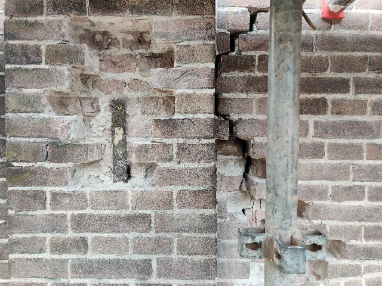

De renovatie van het exterieur hebben wij uitbesteed. Het was hoognodig toe aan een grote onderhoudsbeurt.
Het opbouwen van de immense steiger kostte alleen al bijna twee weken.De staat van de dakkapellen. Ook Monumentenwacht was van mening dat deze niet meer te redden waren.Na flink wat discussiëren en aandringen mocht er uiteindelijk dubbel glas in de nieuwe dakkapellen. Verder moest alles zoveel mogelijk de bestaande situatie benaderen.We hebben ervoor gekozen om de kleurstelling van de rest van het huis ook toe te passen op de nieuwe dakkapellen.

Over de gehele gevel zijn bakstenen vervangen en scheuren opgevuld.Het eindresultaat na drie maanden hard werken.
Tuin
De tuin was een van de eerste items op onze TODO lijst buiten die we hebben opgepakt. We denken graag dat we aardig groene vingers hebben. Het blijft nog altijd een beetje experimenteren wat wel of niet werkt in een schaduwrijke stadstuin.
Afgezien van een paar struiken die nodig aan een snoeibeurt toe waren, was er weinig groen te vinden in de oorspronkelijke tuin.We hebben de bestaande bestrating verlegd, extra borders gecreëerd en nieuwe beplanting erin gezet. De drie leilindes achterin hebben we behouden.Twee jaar later en het groen begint alles aardig op te vullen.
Keuken
De keuken was een van de eerste punten op onze TODO lijst binnendeurs. We koken graag en besteden aardig wat tijd in de keuken. Het is dan fijn om van alle gemakken en comfort voorzien te zijn. En het oog wil ook wat!
De keuken was oorspronkelijk voorzien van een betegeld aanrechtblad.Het granito aanrechtblokje dateert waarschijnlijk uit de jaren '30.De eerste facelift was voornamelijk cosmetisch. Likje verf, nieuw aanrechtblad met spoelbak en nieuwe tegeltjes op de muur.Omdat mijn vrouw graag bakt heb ik de bestaande koven aangepast om ruimte te maken voor twee ovens.Het eindresultaat na de eerste klusronde in de keuken.Al snel hadden we behoefte aan meer opbergruimte en aanrecht oppervlakte. Daarom besloot ik om zelf nog een aanrechtblok te bouwen.Het frame rondom de radiator met uitsparingen om luchtcirculatie te bevorderen.Ik ben ITer van beroep, dus mijn timmermanskunsten zie ik vooral als een leuke vrijetijdsbesteding.Met triplex de detailering aangebracht, rooster boven de radiator en het laatste likje verf.